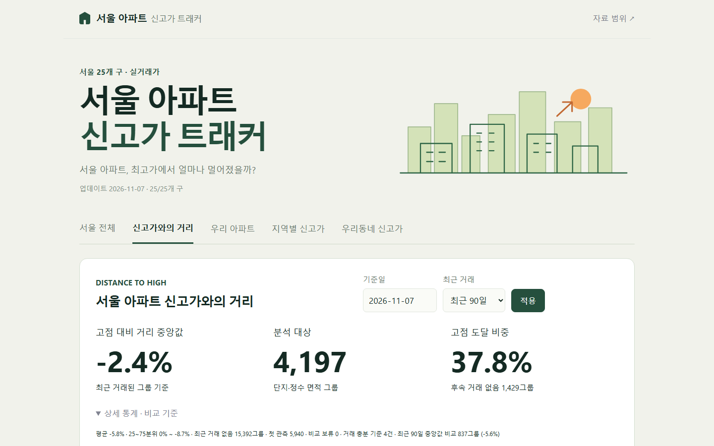
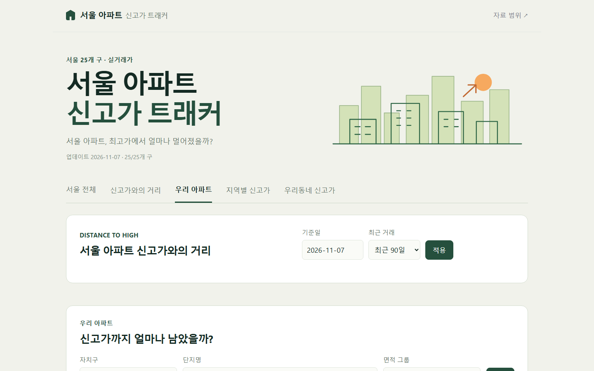
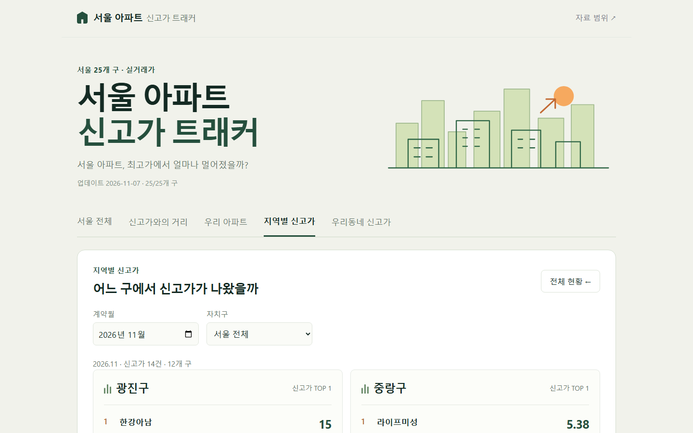

What this service is
Apartment price news always comes with the phrase "new high." But the news alone cannot tell you how many new highs occur in Seoul in a day, or how far your own apartment has slipped from its peak.
This tracker stitches Ministry of Land, Infrastructure and Transport transaction prices together by the same complex and the same whole-number floor-area group, and counts as a new high any deal since January 2021 that exceeds that group's peak price. It does not show only new highs; it also looks at the other side. It calculates how far recently traded groups sit below their peaks on average and how many groups have regained their peaks, to show where the Seoul market stands against its highs right now.
This is a distribution of transactions with no adjustment for floor, orientation or building differences. It is not a current market price, an appraisal or an official price index.
What you can do
See the number of new-high deals as bars by day, by month or over the whole period. Click a bar to open the list of new highs for that period; 10 major housing-policy announcement dates are marked on the same time axis. Each date also shows its data status (districts collected, comparison done or pending).
Choose a reference date and a period (latest deal, 30 days, 90 days, 180 days, 1 year) to get the median distance from the peak, the number of groups analyzed and the share that reached their peak. You can also see the district distance ranking and the distribution of peak recovery.
Choose a district, complex name and floor-area group to see how far that apartment is from its new high. Older deals are also searchable, so check the last contract date as well.
Choose a contract month and district to see the top 3 new-high deals in that district by price. You can also browse with "See other neighborhoods," which shows 4 random districts.
Choose a district, legal neighborhood (beopjeong-dong) and contract start date to find out whether a new record has been set in your neighborhood.
View the deals you looked up with columns for complex, exclusive floor area, price, floor, contract date, previous record, increase in amount and percent, and cancellation status, and download them as CSV.
Screen preview
All of Seoul — new-high deal trend

Distance from the new high — how far from the peak

My apartment — search by complex and floor area

New highs by area — which district they came from
Data and calculation methods
The screen states that all-time new highs are withheld until the full historical data has been verified. Multiple deals on the same day are shown separately, and floor areas are grouped into whole numbers (for example, the 84㎡ group) for comparison.
What we can't know
Transaction reports lag, so the count for recent contract dates may rise later. Even within the same complex and floor area, new-high prices can vary widely by floor, orientation and building, and this service does not adjust for those differences. So many new highs do not mean the whole market is rising, and a short distance does not mean the price will soon rise.
Deals before 2021 are not used in comparisons, and the very fact that many complexes have no recent deals (15,392 groups with no recent deal) is also noted as a limit of the statistics. It does not explain the causes of price changes.
The figures are not investment advice. Before citing them, please check the original data on the Ministry of Land, Infrastructure and Transport's real transaction price disclosure system.
Tech and how it was made
Development status
Updated 2026-11-07, with all 25 Seoul districts collected. When new transaction prices are reported it is refreshed and reflected in the data status by contract date.